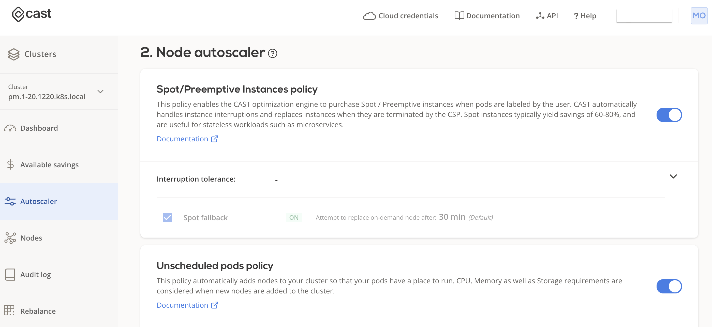
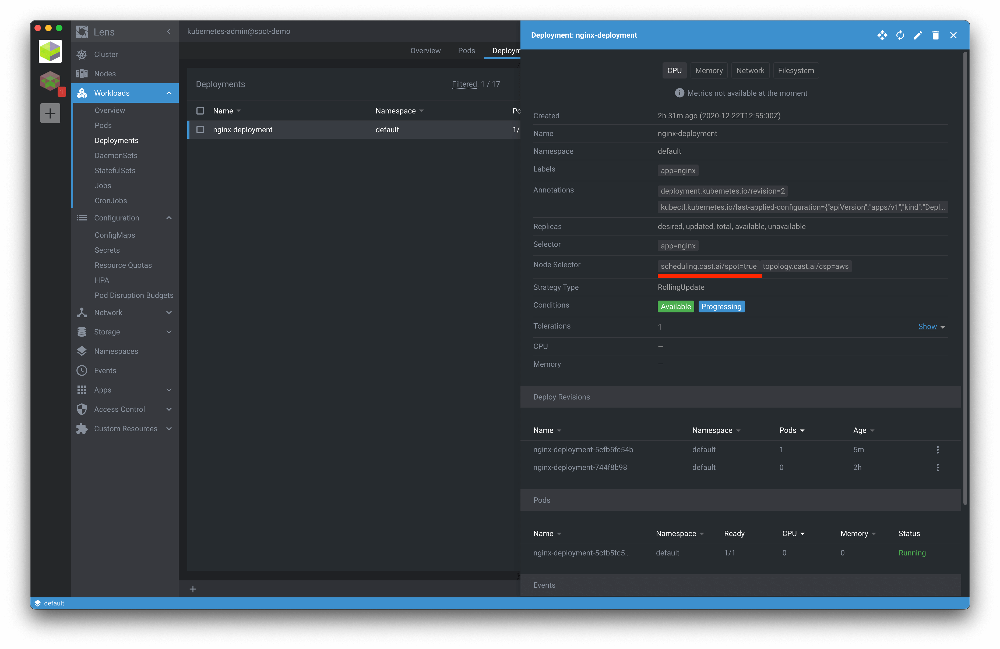
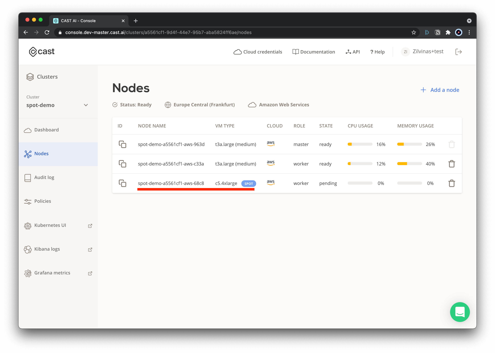
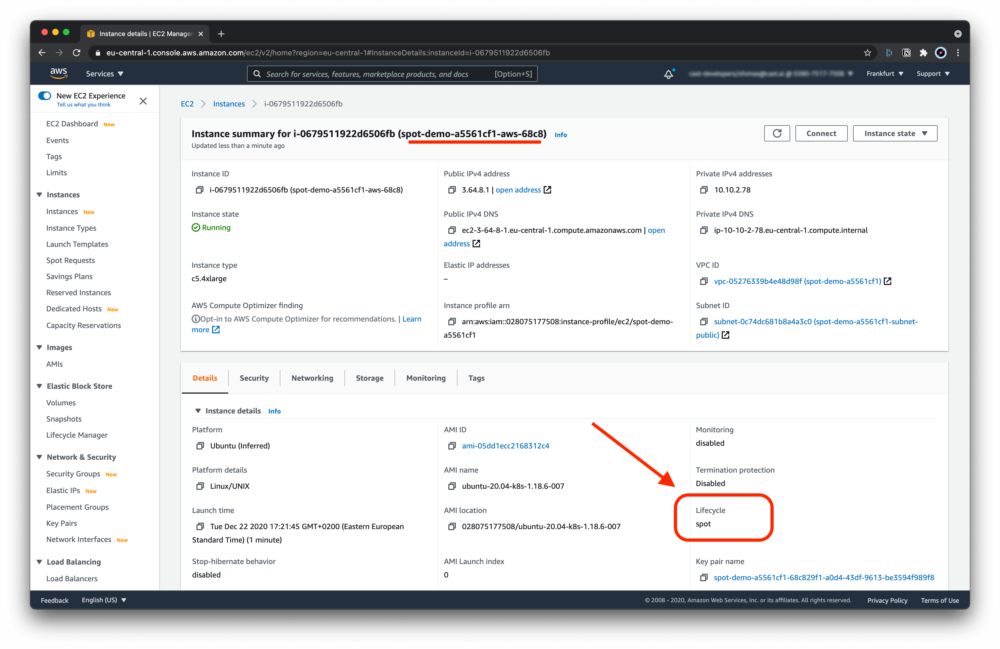

Spot/Preemptible Instances¶
The CAST AI autoscaler supports running your workloads on Spot/Preemptible instances. This guide will help you configure and run it in 5 minutes.
Available configurations¶
Tolerations¶
When to use: Spot instances are optional
When a pod is marked only with tolerations, the Kubernetes scheduler could place such a pod/pods on regular nodes as well.
tolerations:
- key: scheduling.cast.ai/spot
operator: Exists
Node Selectors¶
When to use: only use Spot instances
If you want to make sure that a pod is scheduled on Spot instances only, add nodeSelector as well as per the example below.
The autoscaler will then ensure that only a Spot instance is picked whenever your pod requires additional workload in the cluster.
tolerations:
- key: scheduling.cast.ai/spot
operator: Exists
nodeSelector:
scheduling.cast.ai/spot: "true"
Node Affinity¶
When to use: Spot instances are preferred - if not available, fall back to on-demand nodes
When a Spot instance is interrupted, and on-demand nodes in the cluster have available capacity, pods that previously ran on the Spot instance will be scheduled on the available on-demand nodes if the following affinity rule is applied:
spec:
affinity:
nodeAffinity:
preferredDuringSchedulingIgnoredDuringExecution:
- weight: 1
preference:
matchExpressions:
- key: scheduling.cast.ai/spot
operator: Exists
If you want to move pods back to Spot instances, use the Rebalancer feature.
Spot Reliability¶
When to use: you want to minimize workload interruptions
The Autoscaler can identify which instance types are less likely to be interrupted. You can set a default reliability value cluster-wide in spot instance policy. If you want to control that per-workload, e.g. leave most cost-efficient value globally and only choose more stable instances for specific pods, define this in the deployment configuration by setting scheduling.cast.ai/spot-reliability label on the pod.
Here's an example of how it's done for the typical deployment:
spec:
template:
metadata:
labels:
scheduling.cast.ai/spot-reliability: 10
Reliability is measured by "what is the percentage of reclaimed instances during trailing month for this instance type". This tag specifies an upper limit - all instances below specified reliability value will be considered.
The value is a percentage (range is 1-100), and the meaningful values are:
5: most reliable category; by using this value you'll restrict the Autoscaler to use only the narrowest set of Spot instance types;10-15: reasonable value range to compromise between reliability and price;25and above: typically most instances fall into this category.
For AWS, have a look at Spot instance advisor to get an idea which instances correspond to which reliability category.
Spot/Preemptible Instances fallback¶
CAST AI supports the fallback of Spot/Preemptible instances to on-demand nodes in case there is no Spot/Preemptible instance availability. Our Autoscaler will temporarily add an on-demand node for your Spot-only workloads to run on. Once inventory of Spot/Preemptible instances is again available, on-demand nodes used for the fallback will be replaced with actual Spot/Preemptible instances.
Fallback on-demand instances will be labeled with scheduling.cast.ai/spot-fallback:"true" label.
To enable this feature turn on spot fallback policy using API:
PUT /v1/kubernetes/clusters/{clusterId}/policies
{
...
"spotInstances": {
"clouds": [
"aws"
],
"enabled": true,
"maxReclaimRate": 0,
"spotBackups": {
"enabled": true, // this parameter will enable spot fallback feature
"spotBackupRestoreRateSeconds": 1800 // configure how often CAST AI should try to switch back to spot/preemptible instances
}
}
...
}
Step-by-step deployment on Spot Instance¶
In this step-by-step guide, we demonstrate how to use Spot Instances with your CAST AI clusters.
To do that, we will use an example NGINX deployment configured to run only on Spot/Preemptible instances.
1. Enable relevant policies¶
To start using spot instances go to Autoscaler menu in the UI and enable the following policies:
-
Spot/Preemptible instances policy
- This policy allows the Autoscaler to use Spot instances.
-
Unschedulable pods policy
- This policy requests an additional workload to be scheduled based on your deployment requirements (i.e. run on Spot instances).

2. Example deployment¶
Save the following yaml file, and name it: nginx.yaml:
apiVersion: apps/v1
kind: Deployment
metadata:
name: nginx-deployment
labels:
app: nginx
spec:
replicas: 1
selector:
matchLabels:
app: nginx
template:
metadata:
labels:
app: nginx
spec:
nodeSelector:
scheduling.cast.ai/spot: "true"
tolerations:
- key: scheduling.cast.ai/spot
operator: Exists
containers:
- name: nginx
image: nginx:1.14.2
ports:
- containerPort: 80
resources:
requests:
cpu: '2'
limits:
cpu: '3'
2.1. Apply the example deployment¶
With kubeconfig set in your current shell session, you can execute the following (or use other means of applying deployment files):
kubectl apply -f ngninx.yaml

2.2. Wait several minutes¶
Once the deployment is created, it will take up to several minutes for the Autoscaler to pick up the information about your pending deployment and schedule the relevant workloads in order to satisfy the deployment needs, such as:
- This deployment tolerates Spot instances
- This deployment must run only on Spot instances
3. Spot Instance added¶
- You can see your newly added Spot instance in the cluster node list.

3.1. AWS instance list¶
Just to double-check, go to the AWS console and check that the added node has the Lifecycle: spot indicator.
